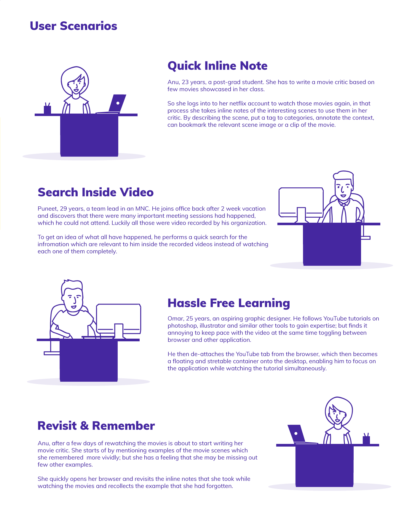
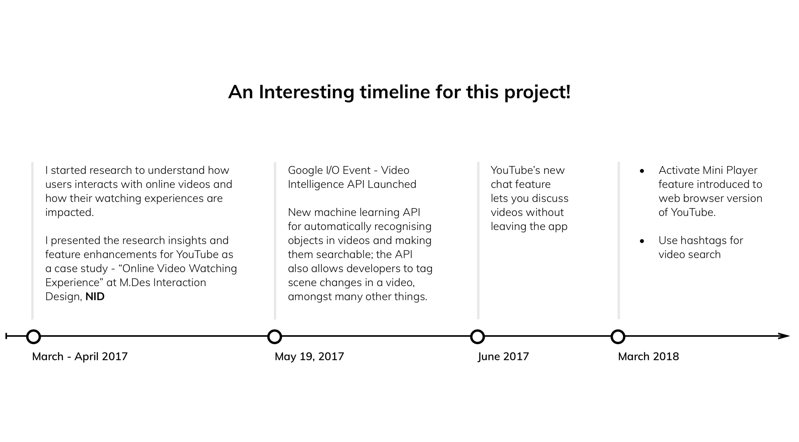

IVE: Inside a video experience 🎁
Overview

Since 2005 onwards, with the surge in online video sharing websites like myspace, youtube and others; users have started to consume information many folds. As a result, online videos has now become an open access to information, a powerful force for education, building understanding, and documenting the world events.
Problem statement
A design research started off from looking into the collaborative office meetings and then transformed into the broader topic of how users interacts with online videos and how their experiences are impacted.
Proposed solution
Demo video
Design Publication:
"Understanding & enhancing the user experience of watching online videos"
in the SIDeR Design Research Conference 2018, held in Helsinki.View Publication
Design Process

Research
This project came into existence to evaluate that hypothesis i.e. "current day interactions of online
videos are very limited". So, I started off with mapping all the possible types of videos and their mode
of applications.


Mapping: Video Viewing Experiences & Capabilities.
User Interviews
Firmly beleiving in the design philosophy of talking to people, in order to identify thier problems, to understand and distinguish their needs from the wants. I started conversing with people around me about how they go about watching videos online.

Quotes from the personal interviews.
Contextual Inquiry
As well established fact in user research, i.e. what users says is not what exactly they need. I made use of the contextual inquiry research method to better understand their behavior while wathcing online videos to achieve their goals.

Note:- Transcribed video of contextual inquiries.
Comparative Analysis - Existing Online Video Sites
A comparative study was done to analyse how various other online video sites currently functions, and understand the nuances of their interfaces which helped me discover the features set that is currently available for the users to interact with.
Note: Documented video showing the comparative study of interfaces of 4 different video sites i.e. Youtube, Daily Motion, Ted and Vimeo.
Ideations
Understanding the Research Data


Key observations
Title’s doesn't justify the content in the video
Users played the video at 1.5x or 2x speed to go through the video quickly while looking for something important
Hassle of toggling between browser and software for hands on training while watching video
User’s (going through the video for the first time) doesn't know what content to expect and when
Users wanted quick lookup in comments section while watching, a few of them used CMD+F (mac) or CTRL+F (windows) to search
User’s wants to save the URL if they found it useful and might use it for future reference
Feedback coming from the horses mouth, materials referred by experts are more trustworthy than any other materials
All these studies pointed out that there is an opportunity area to intervene in designing better user experiences for the users while they are watching an online video.

Testing: Iterative prototype evaluation
Since there are billions of users with YouTube and given tech infrastructure it has, we can assume that the proposed design solution could be used as a case study for other similar websites like Vimeo, online / recorded meeting video players etc.
In order to quickly prototype the conceptual ideas, I used a low fidelity clickable wireframe using Balsamiq, and got it user tested by inviting participants who are kind of heavy users of video streaming website like youtube.
Version 1.0

Evaluation:
Taking cues from the version 1.0 mockup evaluations, it made sense to keep a common interaction point for the new features set, similar to how settings button is currently available now. But at the same time it should be visible to the user and quickly accessible to use as a one touch solution.
Version 2.0

Results
Finalised Product's Feature Set
search content inside an online video
discover quality content as needed
bookmark interesting video snippets
chat & share video snippets to peers
taking quick inline notes for future referencing
flexibility of adding tags by viewers as well
Proposed use case scenarious
Key Learnings
While compiling the complete project for the portfolio, I realised how important it is to always click pictures to document the whole process. It not only helps you to show your process but also keeps a tab on why certain critical decisions made as project progresses.During reviews, of Balsamiq clickable mockup, I had to constantly remind the reviewers that its a mockup.
As I did not know much about the web development, I am currently in the process learning the technical aspects of web development.
Key Highlight + Little Bragging 😉
This complete project was independently conceived and presented as a Design Project outcome of 6 Weeks duration (March - April 2017) in M.Des Interaction Design 2nd Semester at National Institute of Design, India.Most of my design research observations and insights proposed feature enhancements for YouTube (as a case study), for example
● Floating browser window Search Results 👉 Activate Mini Player
● Hash tagging for video searching 👉 Hashtags for Videos
● Video specific chatting functionality 👉 Chat for web browser based YouTube
● timestamp highlighter of searched item 👉 Suggested youtube "clips" on google search Or "Video Chapters"
were similar to what YouTube has introduced post April 2017. However, I still have few more feature enhancements which havenʼt been implemented anywhere as of now, and I am in the process of making a Minimum Viable Product prototype for the same.
